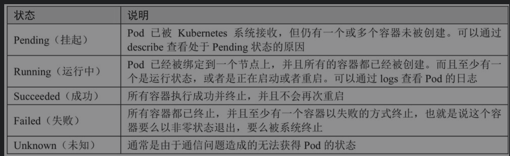
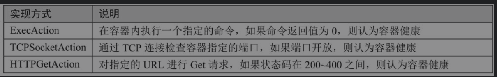
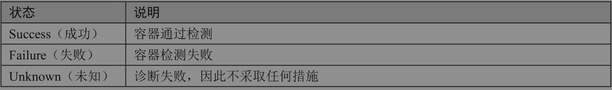
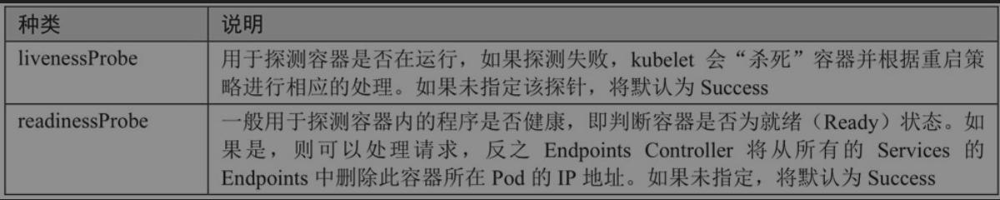
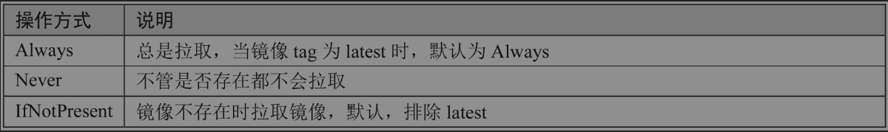
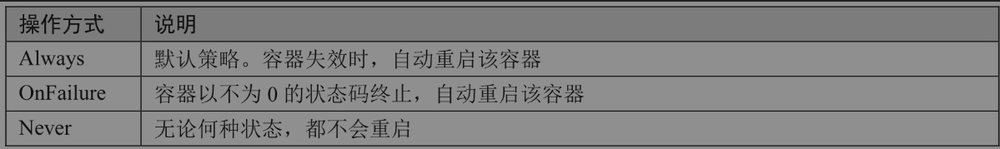

Contents
Kubernetes基础¶
Kubernetes致力于提供跨主机集群的自动部署、扩展、高可用以及运行应用程序容器的平台，其遵循主从式架构设计，其组件可以分为管理单个节点（Node）组件和控制平面组件。Kubernetes Master是集群的主要控制单元，用于管理其工作负载并指导整个系统的通信。Kubernetes控制平面由各自的进程组成，每个组件都可以在单个主节点上运行，也可以在支持高可用集群的多个节点上运行。
Master节点¶
Master节点是Kubernetes集群的控制节点，在生产环境中不建议部署集群核心组件外的任何Pod，公司业务的Pod更是不建议部署到Master节点上，以免升级或者维护时对业务造成影响。Master节点的组件包括：
APIServer¶
APIServer是整个集群的控制中枢，提供集群中各个模块之间的数据交换，并将集群状态和信息存储到分布式键－值（key-value）存储系统Etcd集群中。同时它也是集群管理、资源配额、提供完备的集群安全机制的入口，为集群各类资源对象提供增删改查以及watch的REST API接口。
APIServer作为Kubernetes的关键组件，使用Kubernetes API和JSON overHTTP提供Kubernetes的内部和外部接口。
Scheduler¶
Scheduler是集群Pod的调度中心，主要是通过调度算法将Pod分配到最佳的节点（Node），它通过APIServer监听所有Pod的状态，一旦发现新的未被调度到任何Node节点的Pod（PodSpec.NodeName为空），就会根据一系列策略选择最佳节点进行调度，对每一个Pod创建一个绑定（binding），然后被调度的节点上的Kubelet负责启动该Pod。Scheduler是集群可插拔式组件，它跟踪每个节点上的资源利用率以确保工作负载不会超过可用资源。因此Scheduler必须知道资源需求、资源可用性以及其他约束和策略，例如服务质量、亲和力／反关联性要求、数据位置等。Scheduler将资源供应与工作负载需求相匹配以维持系统的稳定和可靠，因此Scheduler在调度的过程中需要考虑公平、资源高效利用、效率等方面的问题。
Controller Manager¶
Controller Manager是集群状态管理器（它的英文直译名为控制器管理器），以保证Pod或其他资源达到期望值。
当集群中某个Pod的副本数或其他资源因故障和错误导致无法正常运行，没有达到设定的值时，Controller Manager会尝试自动修复并使其达到期望状态。
Controller Manager包含NodeController、ReplicationController、EndpointController、NamespaceController、ServiceAccountController、ResourceQuotaController、ServiceController和TokenController，该控制器管理器可与API服务器进行通信以在需要时创建、更新或删除它所管理的资源，如Pod、服务断点等。
Node节点¶
Node节点也被称为Worker或Minion，是主要负责部署容器（工作负载）的单机（或虚拟机），集群中的每个节点都必须具备容器的运行环境（runtime），比如Docker及其他组件等。Kubelet作为守护进程运行在Node节点上，负责监听该节点上所有的Pod，同时负责上报该节点上所有Pod的运行状态，确保节点上的所有容器都能正常运行。当Node节点宕机（NotReady状态）时，该节点上运行的Pod会被自动地转移到其他节点上。
Node节点包括：
Kube-Proxy¶
负责各Pod之间的通信和负载均衡。
Docker Engine¶
Docker引擎，负载对容器的管理。
Pod¶
1.什么是Pod?¶
Pod可简单地理解为是一组、一个或多个容器，具有共享存储／网络及如何运行容器的规范。
Pad包含一个或多个相对紧密耦合的应用程序容器，处于同一个Pod中的容器共享同样的存储空间（Volume，卷或存储卷）、IP地址和Port端口，容器之间使用localhost:port相互访问。根据Docker的构造，Pod可被建模为一组具有共享命令空间、卷、IP地址和Port端口的Docker容器。Pod包含的容器最好是一个容器只运行一个进程。每个Pod包含一个pause容器，pause容器是Pod的父容器，它主要负责僵尸进程的回收管理。Kubernetes为每个Pod都分配一个唯一的IP地址，这样就可以保证应用程序使用同一端口，避免了发生冲突的问题。一个Pod的状态信息保存在PodStatus对象中，在PodStatus中有一个Phase字段，用于描述Pod在其生命周期中的不同状态。
Pod状态字段Phase的不同取值

2.Pod探针Pod探针¶
用来检测容器内的应用是否正常，目前有三种实现方式.
Pod探针的实现方式

Pod探针每次检查容器后可能得到的容器状态

Kubelet有两种探针（即探测器）可以选择性地对容器进行检测

3.Pod镜像拉取策略和重启策略¶
Pod镜像拉取策略。用于配置当节点部署Pod时，对镜像的操作方式
镜像拉取策略

Pod重启策略。在Pod发生故障时对Pod的处理方式
Pod重启策略

4.创建一个Pod¶
在生产环境中，很少会单独启动一个Pod直接使用，经常会用Deployment、DaemonSet、StatefulSet等方式调度并管理Pod，定义Pod的参数同时适应于Deployment、DaemonSet、StatefulSet等方式。
在Kubeadm安装方式下，kubernetes系统组件都是用单独的Pod启动的，当然有时候也会单独启动一个Pod用于测试业务等，此时可以单独创建一个Pod。
创建一个Pod的标准格式如下：
apiVersion: v1
kind: Pod
metadata:
name: myapp-pod
labels:
app: myapp
spec:
containers:
- name: myapp-container
image: busybox
command: ['sh', '-c', 'echo The app is running! && sleep 3600']
initContainers:
- name: init-myservice
image: busybox
command: ['sh', '-c', 'until nslookup myservice; do echo waiting for myservice; sleep 2; done;']
- name: init-mydb
image: busybox
command: ['sh', '-c', 'until nslookup mydb; do echo waiting for mydb; sleep 2; done;']